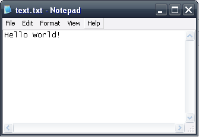
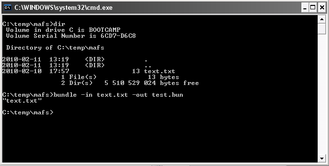

MAFS is a reimplementation of the Standard C File I/O routines. It operates on either a binary image attached as a resource or using local stores for permanent storage. The binary image is actually a virtual filesystem generated using our tool Bundle.
This comes in handy when porting applications that use a lot of data stored as files in the file system: just use the Bundle tool on the data folder to generate an image, attach it as a resource in the MoSync application, and mount it using the API functions provided.
A policy has been implemented to handle transparently the permanent storage of files. The fopen function first looks to see if the file exists in permanent storage. If that is the case, everything is written or read from that permanent storage. If no file is found in permanent storage, it continues to search for the file in the binary image. Reading from such a file is done by buffering data from the binary resource. Whenever such a file is written to, a copy of the data is created and saved as permanent storage.
Any reference documentation for the f* functions of the Standard C File API will work as reference, but we've also included documentation for them in our own reference documentation. There are two special functions for mounting the filesystem image and unmounting it. There can only be one filesystem image mounted at once.
Use the function setCurrentFileSystem to mount it and freeCurrentFileSystem to unmount it:
To show how it works, we begin by making a .bun file using the Bundle-tool.
First create a text-file:

Then generate the .bun-file:

Finally we include the .bun file as an unloaded binary resource:
.res R_TEST_FILESYSTEM .ubin .include "test.bun"
We can now write a small program that mounts the bun-file, opens and reads the text-file. Let's do it using the Moblet-architecture:
#include <MAUtil/Moblet.h>
#include <MAFS/File.h>
#include "MAHeaders.h"
using namespace MAUtil;
/*
* MyMoblet class that will show how to use File System.
*/
class MyMoblet : public Moblet
{
public:
MyMoblet()
{
char text[1024];
setCurrentFileSystem(R_TEST_FILESYSTEM, 0);
FILE *file = fopen("text.txt", "r");
if(!file) maPanic(1, "Could not open file!");
if(!fgets(text, 1024, file)) maPanic(1, "Could not read string!");
maSetColor(0x00ff00);
maDrawText(2, 2, text);
maUpdateScreen();
}
};
/*
* The main execution of the program starts here.
*/
extern "C" int MAMain()
{
Moblet::run(new MyMoblet());
return 0;
};